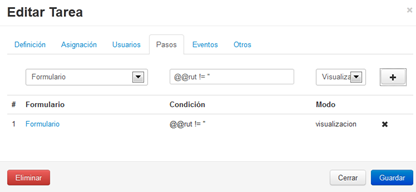
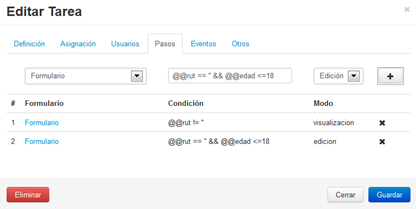
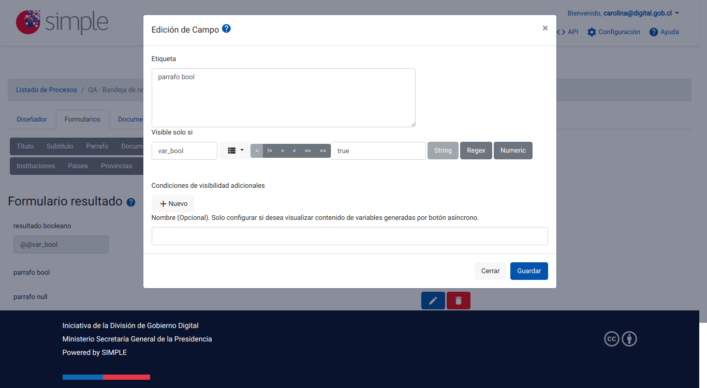
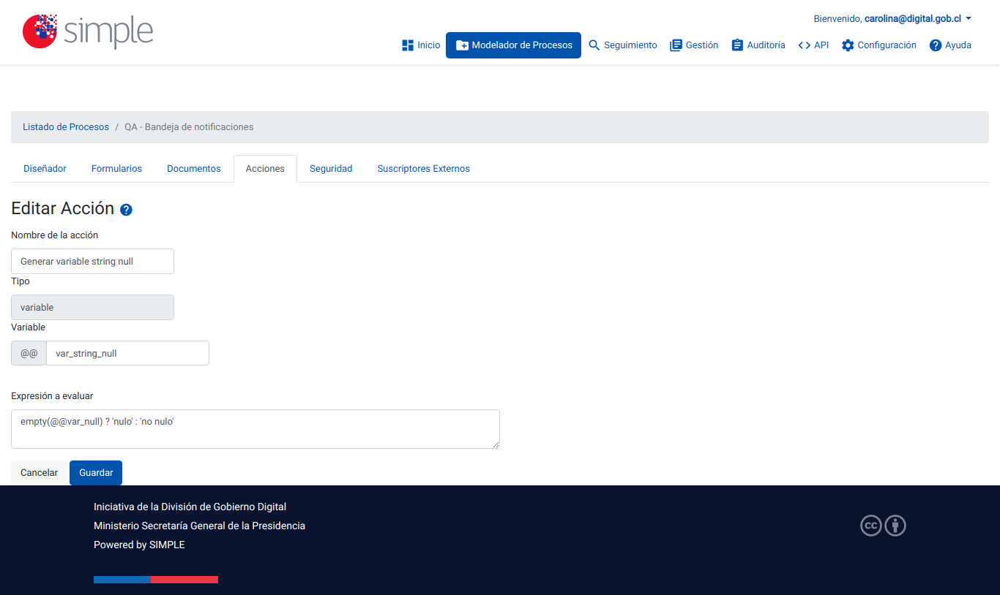
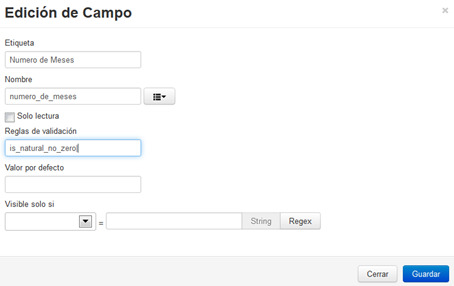

2.3.6 Sintaxis para la correcta aplicación de reglas de negocio y reglas de validación
Para aplicar reglas de negocio sobre tareas, conectores y/o formularios, es necesario conocer la sintaxis, por este motivo en esta sección se indican los distintos objetos disponibles para aplicar regla de negocio y de validación de campos.
Reglas de Negocio:
- Variables: mantienen el valor de un campo en memoria, Simple admite dos tipos de variables, las variables de formularios y las variables de sesión, para utilizar cada una de estas debe utilizarlas de la siguiente manera:
- Variable de Formulario: tal como se indicó en el apartado de Generación de Formularios, cada campo que se han añadido en los diversos formularios del modelo de proceso se encuentran identificados por su nombre, para hacer uso del campo, se debe llamar por su variable y esto se realiza anteponiendo dos arrobas (@@) antes del nombre del campo, siendo:
- Formato general: @@variable_de_formulario
- Ejemplo de uso de campo: @@direccion_usuario
- Las variables no pueden tener espacios entre las palabras, habitualmente se sustituye con el símbolo _
- Formato general: @@variable_de_formulario
- Variables de Sesión: las variables de sesión son variables especiales de Simple, que completan la información de acuerdo al usuario que se encuentra registrado (logeado) realizando la etapa del trámite, siendo:
- Formato general: @!variable_de_sesion
- Palabras claves admitidas en Simple: @!rut, @!nombres, @!apellido_paterno, @!apellido_materno, @!email, @!tramite_id(otorga el ID de trámite que se está cursando), @!tramite_proc_cont(otorga el número consecutivo de trámite dentro del proceso que se está cursando), @!fecha_vencimiento(retorna la fecha de vencimiento de una trámite, el cual la tarea fue configurada que tenía vencimiento), @!dias_para_vencer(retorna en un arreglo los días hábiles y días totales que faltan para que la tarea esté vencida. Ejemplo: [5,9]), @!base_url(retorna la url base del sitio)
- Variables Globales del trámite: estas variables obtienen el conjunto de toda la información que una variable tenga en TODOS los procesos/trámites generados, la forma de identificarlo es con un @#variable, un ejemplo ùtil del uso de esta variable es permitir identificar si una solicitud de trámite ya ha sido solicitada, o si un ciudadano ya solicitó un trámite en particular, esto se realizaría leyendo la variable @#ciudadano y luego buscando dentro del arreglo que entrega in_array(@#ciudadano) con esto último se validará si el ciudadano está en el arreglo.
- Variable de Formulario: tal como se indicó en el apartado de Generación de Formularios, cada campo que se han añadido en los diversos formularios del modelo de proceso se encuentran identificados por su nombre, para hacer uso del campo, se debe llamar por su variable y esto se realiza anteponiendo dos arrobas (@@) antes del nombre del campo, siendo:
- Variables de Bandeja de Entrada: Se incluyeron dos nuevas variables de datos de seguimiento (@@tramite_ref, @@tramite_descripcion), para poder mostrar de manera particular la descripción del trámite y un número de referencia no general, tanto en la bandeja de entrada, en sin asignar, en el historial de participados y en seguimiento.
- Operadores Lógicos, relacionales y de igualdad: son operadores que permiten realizar comparativas entre un valor u otro.
- Menor ‘<’: indica que el campo de la izquierda es menor al campo de la derecha, de ser así la sintaxis sería verdadera. Ejemplo: @@edad < 35, si un usuario ingresa la edad en un formulario menor a 35 entonces esta sintaxis sería verdadera.
- Mayor ‘>’: indica que el campo de la izquierda es mayor al campo de la derecha, de ser así la sintaxis sería verdadera. Ejemplo: @@edad > 35, si un usuario ingresa la edad en un formulario mayor a 35 entonces esta sintaxis sería verdadera. De lo contrario la sintaxis es falsa.
- Menor o igual ‘<=’: indica que el campo de la izquierda es menor o igual al campo de la derecha, de ser así la sintaxis sería verdadera. Ejemplo: @@edad =< 35, si un usuario ingresa la edad en un formulario menor a 35 o igual a 35 entonces esta sintaxis sería verdadera.
- Mayor o igual ‘>=’: indica que el campo de la izquierda es mayor o igual al campo de la derecha, de ser así la sintaxis sería verdadera. Ejemplo: @@edad =< 35, si un usuario ingresa la edad en un formulario mayor a 35 o igual a 35 entonces esta sintaxis sería verdadera.
- Igual a… ‘==’: indica que el campo de la izquierda es igual al campo de la derecha. Por ejemplo: @@edad_ingreso == @@edad_egreso, se compara el valor de ambas variables y si son iguales entonces la regla es verdadera.
- Y ‘&&’: evalúa dos expresiones, si ambas son verdaderas entonces el resultado es verdadero, por ejemplo: @@nombre == ‘pedro’ && @@edad <= ‘35’, si la instrucción anterior se cumple entonces la regla es verdadera.
- O ‘||’: evalúa dos expresiones, si una de ellas es verdadera, entonces el resultado es verdadero, por ejemplo: @@nombre == ‘pedro’ || @@edad <= ‘35’, si la variable @@nombre es diego, pero la variable @@edad es 30, entonces la instrucción se cumple por lo tanto la regla es verdadera.
- Funciones matemática: es posible aplicar una serie de funciones matemáticas a las reglas de validación, están son basadas en el lenguaje de programación PHP, entre las cuales se destacan:
- Sqrt: obtiene la raíz cuadrada de un elemento.
- Pow: eleva un número, base con exponente.
- Abs: obtiene el valor absoluto de un número.
- Log: obtiene el logaritmo de un número.
- Dado que son una infinidad de funciones matemáticas incluidas, las cuales están fuera del alcance del manual, puede dirigirse al enlace siguiente, a fin de obtener mayor información:
- http://php.net/manual/en/book.math.php (sitio en inglés).
Ejemplos de aplicación de Regla de Negocio:
- En el siguiente caso, el formulario se desplegará en modo de visualización únicamente si el Rut es distinto a vacío:

Figura 41: "Ejemplo 1 de Aplicación de Regla de Negocio"
- El ejemplo siguiente, para el mismo formulario, si el Rut está vacío y la edad es menor o igual a 18, el formulario será visible en modo de edición:

Figura 42: "Ejemplo 2 de aplicación de Regla de Negocio"
En el caso de que el resultado de una operación entregue un valor booleano(true o false) esta se debe evaluar como string al momento de comparar para luego hacer visible un campo determinado

Figura 43: "Ejemplo de comparación con datos de tipo booleano para aplicar visibilidad a un campo"
En el caso de querer mostrar un campo para comparar contra un valor null se recomienda en primer lugar realizar una acción de tipo variable y verificar si un dato obtiene un null almacenar un dato de tipo string y luego en el formulario comparar con ese dato de tipo string.

Figura 44: "Ejemplo de comparación con datos de tipo null para aplicar visibilidad a un campo"
-
Tabla de equivalencias de reglas de validaciones
| Regla Simple v1 | Regla Simple v2 |
|---|---|
| rut | rut |
| required | required |
| matches | regex:patron |
| min_length | min:num |
| max_length | max:num |
| exact_length | digits:num |
| greater_than | min:num |
| less_than | max:num |
| alpha | alpha |
| alpha_numeric | alpha_num |
| alpha_dash | rut |
| numeric | numeric |
| integer | integer |
| is_natural | integer|min:0 |
| is_natural_no_zero | integer|min:1 |
| valid_email | |
| valid_emails | emails |
Existen además reglas de validación automáticas, las cuales deben ser separadas mediante el símbolo | (tubo) en el campo a validar.
Si se quiere que un dato sea opcional y además que sea validado si es ingresado debe ser especificado además como "nullable".
Ejemplo de RUT opcional y en el caso de ser ingresado que sea validado: "nullable|rut"
El listado es el siguiente:
| Regla | Parám.de Entrada | Descripción | Ejemplo de Uso |
|---|---|---|---|
| Rut | No | Valida campo Rut con su lógica. | |
| Required | No | Señala que el campo debe ser requerido. Retorna Falso si el campo está vacío. | |
| IP | No | Retorna Falso si el campo no es una dirección IP válida. | |
| Min | Si | Retorna Falso si el largo del campo es menor a lo indicado por parámetro. | min:6 |
| Max | Si | Retorna Falso si el largo del campo es mayor a lo indicado por parámetro. | max:12 |
| Digits | Si | Retorna Falso si el campo contiene cualquier carácter distinto que no sea un digito. | digits:8 |
| Between | Si | Retorna Falso si el largo del campo no está en rango indicado por parámetro. | between:min,max |
| Digits_between | Si | Retorna Falso si el campo no está en rango indicado por parámetro. | digits_between:min,max |
| Nullable | No | Permite que el campo pueda ser nulo. | |
| Alpha | No | Retorna Falso si el campo contiene cualquier carácter distinto al abecedario. | |
| alpha_num | No | Retorna Falso si el campo contiene cualquier carácter distinto a alfanumérico. | |
| alpha_dash | No | Retorna Falso si el campo contiene cualquier carácter distinto a alfanumérico, caracteres numéricos, barras. | |
| numeric | No | Retorna Falso si el campo no es numérico. | |
| integer | No | Retorna Falso si el campo no es un valor entero. | |
| Regex | Sí | Retorna Falso si el campo no coindice con el patron. | regex:patron |
| No | Retorna Falso si el campo no es un correo electrónico válido. | ||
| emails | No | Retorna Falso si los correos electrónicos indicados en el campo no son correos electrónicos válidos. |
Ejemplos de validación de campos:
- Para el campo Rut del formulario generado, se validará que se ingrese sea un Rut válido además que el campo sea obligatorio, como se puede visualizar ambas instrucciones se encuentran separadas por | (tubo):

Figura 43: "Ejemplo 1 para Validación de Campos"
- El siguiente ejemplo, solicita el número de meses con la restricción que sea un número natural distinto a cero:

Figura 44: "Ejemplo 2 para Validación de Campos"